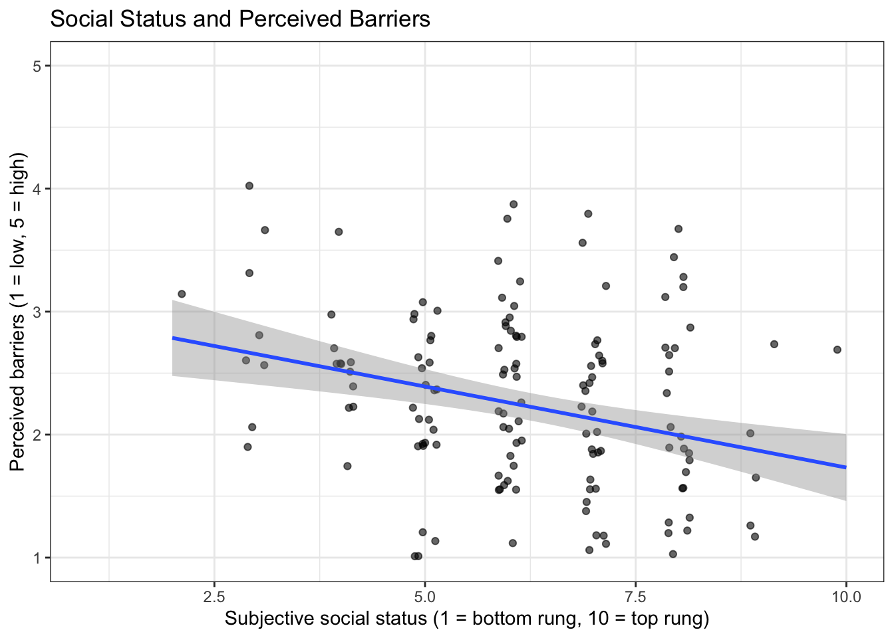
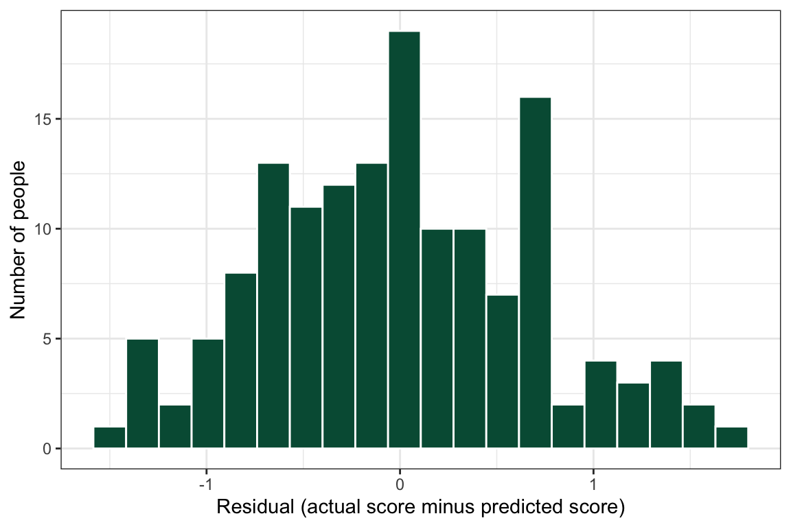
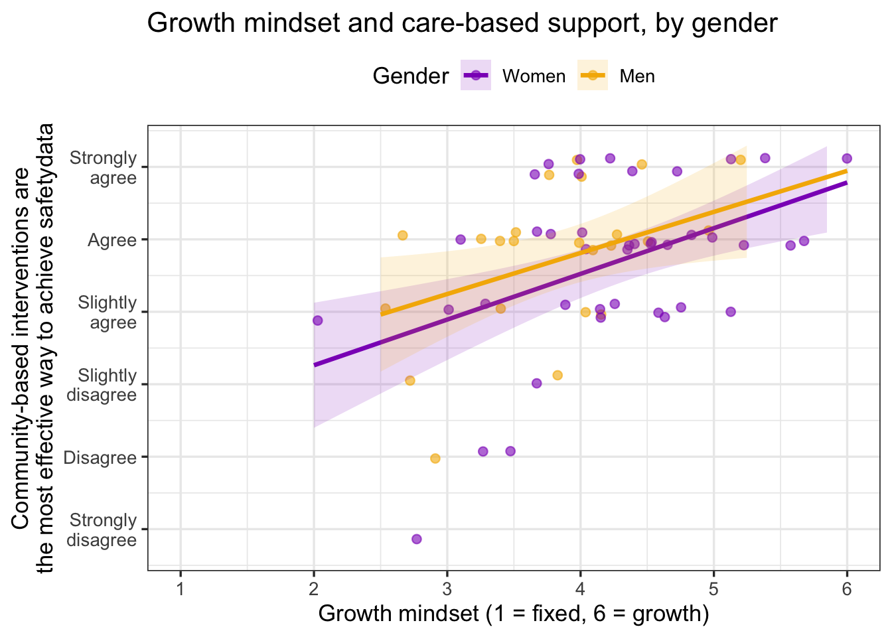
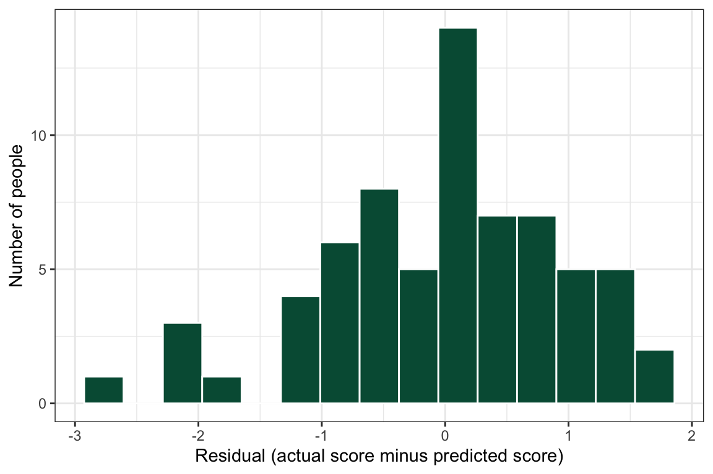
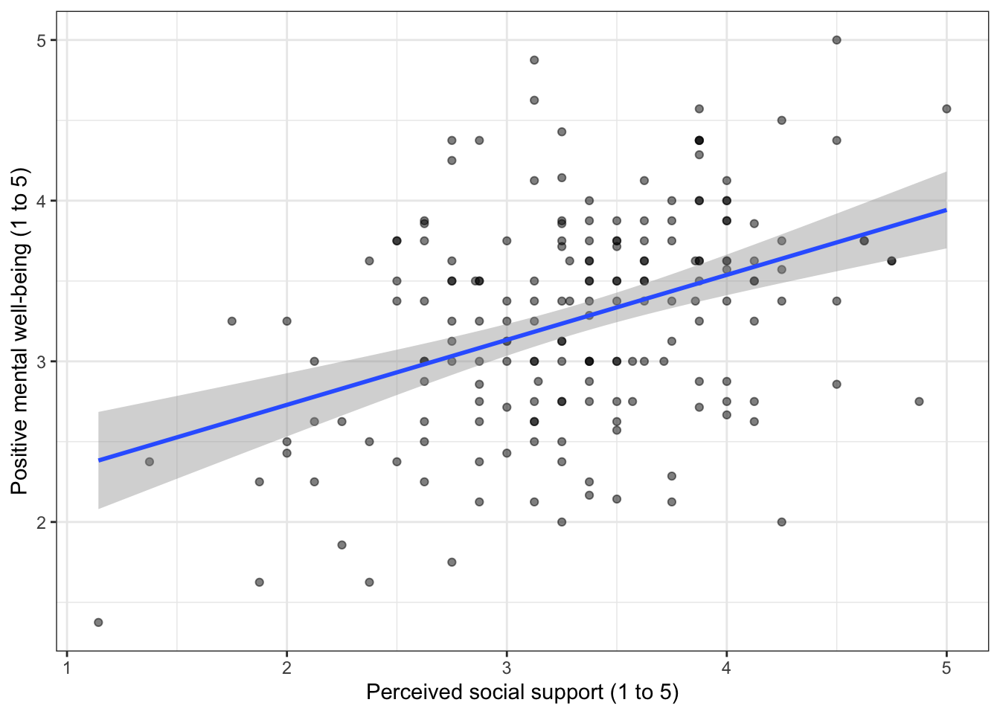
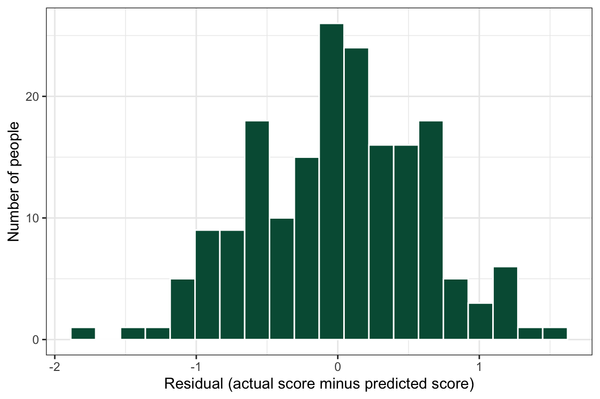

library(tidyverse)26 Relate 3+ Variables
Linear regression: how to run it and report it
Abstract
This chapter teaches researchers to examine a relationship question with a linear regression in R. Researchers start with a simple regression (one predictor and one outcome), learn to read the intercept, the slope, the p-value, and R-squared, and then add more predictors to build a multiple linear regression, including a categorical predictor such as gender. The chapter shows how to check the residuals (the outcome itself need not be normal), how to report a regression in a sentence and in a table, and which common shortcuts to avoid (leaving a category as a number, and cutting a score into two groups). A second Play re-runs a published FRI result, growth mindset predicting support for care-based violence prevention, with gender added as a third variable. In The Lab, researchers run three models with the lab dataset (one predictor, a binary predictor, and a dummy-coded predictor) and check their own answers. In Your Turn, researchers use a copy-ready template and a checklist for their own research question.
Keywords
linear regression, multiple regression, lm, predictors, residuals, relationship
Resources Ref’s kickoff: find the Ref before you code
Ref’s kickoff: find the Ref before you code
Ref’s kickoff: find the Ref before you code
Open Project → Open .qmd → Run load-library chunk → Run All Chunks Above → code. If anything looks wrong, use Ref’s Quick Checklist.
ResourcesResources: regression
26.1 How This Chapter Works
You will go through this chapter three times, with three different datasets.
| Pass | Section | Dataset | What you do |
|---|---|---|---|
| 1 | The Play | pregnancydata (example, simulated) |
Watch the play. Read the code and the output, step by step. |
| 2 | The Lab | lab dataset | Run the play. Run two regressions yourself during the R Lab, then check your own work. Labs are not graded. |
| 3 | Your Turn | your team’s dataset | Call your own play. After you finish all of the R Labs, come back and run the regression for your own research question. |
GoGo: Know your route first
This chapter is the last step on The Analysis Map for a relationship question with three or more variables: one outcome that is a score, and two or more predictors. Make your scatterplot first in Visualize a Relationship.
26.2 📋 The Play
26.2.1 Play 1 (simple and multiple linear regression): relate three predictors to perceived barriers
Example Data: pregnancydata
The example comes from an FRI Public Health team that surveyed people about health beliefs during pregnancy. One of their questions was: do people with lower social status perceive more barriers to following health advice during pregnancy, after we account for their age and gender?
CautionCaution: This example dataset is simulated
To protect the people who took the team’s survey, the file used in this chapter does not contain their answers. It is a simulated dataset: a computer generated every row so that the variables and their averages look like the team’s data. Use it to learn the play. Do not cite its results.
| Variable | What it is | Values |
|---|---|---|
BARRIERS |
the outcome: perceived barriers (the mean of 9 survey items) | 1 = low to 5 = high |
SSS |
subjective social status (a ladder with 10 rungs) | 1 = bottom to 10 = top |
AGE |
age in years | 18 and up |
GENDER |
gender | 1 = Woman, 2 = Man |
Load and Import
pregnancydata <- read.csv("data/pregnancy_beliefs_SIMULATED.csv")
summary(pregnancydata) ID AGE GENDER SSS
Length:160 Min. :18.00 Min. :-99.000 Min. :-99.00
Class :character 1st Qu.:19.00 1st Qu.: 1.000 1st Qu.: 5.00
Mode :character Median :22.00 Median : 1.000 Median : 6.00
Mean :28.53 Mean : -0.675 Mean : 2.35
3rd Qu.:34.25 3rd Qu.: 1.000 3rd Qu.: 7.00
Max. :63.00 Max. : 2.000 Max. : 10.00
NA's :4
BARRIERS
Min. :1.000
1st Qu.:1.670
Median :2.220
Mean :2.226
3rd Qu.:2.697
Max. :4.000
Look at the minimum of SSS and GENDER. A value of -99 is not a real answer. It is the code for “Prefer not to answer”, and it has to become missing (NA) before you analyze anything.
Step 1: Get the data ready
pregnancydata <- pregnancydata |>
mutate(
SSS = na_if(SSS, -99), # -99 becomes NA (missing)
GENDER = na_if(GENDER, -99),
GENDER = factor(GENDER, # tell R that GENDER is a category
levels = c(1, 2),
labels = c("Woman", "Man")))
summary(pregnancydata) ID AGE GENDER SSS
Length:160 Min. :18.00 Woman:125 Min. : 2.000
Class :character 1st Qu.:19.00 Man : 32 1st Qu.: 5.000
Mode :character Median :22.00 NA's : 3 Median : 6.000
Mean :28.53 Mean : 6.299
3rd Qu.:34.25 3rd Qu.: 7.750
Max. :63.00 Max. :10.000
NA's :4 NA's :6
BARRIERS
Min. :1.000
1st Qu.:1.670
Median :2.220
Mean :2.226
3rd Qu.:2.697
Max. :4.000
CautionCaution: Don’t leave a category as a number
In the data file, GENDER is stored as the numbers 1 and 2. If you leave it that way, R treats gender as a score, as if a man were “one unit more” than a woman. factor() tells R that the numbers are labels for groups. Do this for every categorical predictor before you run a regression.
Step 2: Look before you test
Always make the plot first (see Visualize a Relationship). BARRIERS is a mean of survey items, so points can stack. Jitter them.
plot1_barriers_sss_scatter <- ggplot(
data = pregnancydata,
mapping = aes(
x = SSS,
y = BARRIERS)) +
geom_jitter(width = 0.15, height = 0.05, alpha = 0.6) +
geom_smooth(method = "lm") +
xlim(1, 10) +
ylim(1, 5) +
ggtitle("Social Status and Perceived Barriers") +
xlab("Subjective social status (1 = bottom rung, 10 = top rung)") +
ylab("Perceived barriers (1 = low, 5 = high)") +
theme_bw()
plot1_barriers_sss_scatter
ggsave("plots/plot1_barriers_sss_scatter.png", plot = plot1_barriers_sss_scatter, width = 8, height = 5, dpi = 300)The line slopes downward: people who place themselves higher on the ladder report fewer barriers. A regression puts a number on that line and tests it.
Step 3: One predictor (simple regression)
The function is lm(), which stands for linear model. Read the formula BARRIERS ~ SSS as “BARRIERS is predicted by SSS”. The outcome always goes on the left of the ~.
# regmodel1: BARRIERS predicted by SSS alone (simple regression)
regmodel1 <- lm(BARRIERS ~ SSS, data = pregnancydata)
summary(regmodel1)
Call:
lm(formula = BARRIERS ~ SSS, data = pregnancydata)
Residuals:
Min 1Q Median 3Q Max
-1.39107 -0.50107 -0.05018 0.49349 1.67425
Coefficients:
Estimate Std. Error t value Pr(>|t|)
(Intercept) 3.04994 0.22107 13.796 < 2e-16 ***
SSS -0.13177 0.03392 -3.884 0.000153 ***
---
Signif. codes: 0 '***' 0.001 '**' 0.01 '*' 0.05 '.' 0.1 ' ' 1
Residual standard error: 0.7037 on 152 degrees of freedom
(6 observations deleted due to missingness)
Multiple R-squared: 0.0903, Adjusted R-squared: 0.08432
F-statistic: 15.09 on 1 and 152 DF, p-value: 0.0001527
GoGo: name every test
ttestmodel1, regmodel1, and say what each number means
Do not call a model model. By the end of a report you will have several, and model tells nobody which one a table came from. Name each one with the test and a number, nothing else: the number is the order you ran them in, the same order papers use in a regression table (Model 1, Model 2). Then, on the line above every test, write a comment that says what that number means, because regmodel2 on its own does not:
# regmodel1: BARRIERS predicted by SSS alone (simple regression)
regmodel1 <- lm(BARRIERS ~ SSS, data = pregnancydata)
# regmodel2: regmodel1 + AGE + GENDER (multiple regression)
regmodel2 <- lm(BARRIERS ~ SSS + AGE + GENDER, data = pregnancydata)One name for each test in this playbook:
| Test | Name |
|---|---|
| Independent-samples t-test | ttestmodel1 |
| Mann-Whitney U | mannmodel1 |
| Paired-samples t-test | ptestmodel1 |
| Wilcoxon signed-rank | wilcomodel1 |
| ANOVA, Kruskal-Wallis, ANCOVA | anovamodel1, kruskalmodel1, ancovamodel1 |
| Pearson, Spearman | pearsonmodel1, spearmanmodel1 |
| Linear regression | regmodel1, regmodel2, … |
Lowercase, like every object in this playbook; the uppercase names are variables.
How to read the output:
(Intercept), Estimate = 3.05. This is where the line starts: the predictedBARRIERSscore for a person whoseSSSis 0. It is rarely interesting by itself.SSS, Estimate = -0.13. This is the slope, and it is the number you care about. For every one rung higher on the ladder, the predictedBARRIERSscore goes down by 0.13 points. A negative slope is a line that goes down. A positive slope is a line that goes up.Pr(>|t|)is the p-value for that slope. Here it is less than .001, which is smaller than .05, so the relationship is statistically significant.Multiple R-squared= 0.09.SSSexplains about 9% of the differences between people inBARRIERS. In survey research, small values like this are common.- At the bottom, R tells you how many people were left out because of missing answers. Report the number of people who were in the model:
nobs(regmodel1)= 154.
Step 4: Three predictors (multiple regression)
To add predictors, add them to the formula with +. This answers the team’s real question: is social status still related to barriers after we account for age and gender?
# regmodel2: regmodel1 + AGE + GENDER (multiple regression)
regmodel2 <- lm(BARRIERS ~ SSS + AGE + GENDER, data = pregnancydata)
summary(regmodel2)
Call:
lm(formula = BARRIERS ~ SSS + AGE + GENDER, data = pregnancydata)
Residuals:
Min 1Q Median 3Q Max
-1.50023 -0.48651 -0.02719 0.52032 1.71508
Coefficients:
Estimate Std. Error t value Pr(>|t|)
(Intercept) 3.050186 0.235938 12.928 < 2e-16 ***
SSS -0.126588 0.034820 -3.636 0.000385 ***
AGE -0.002173 0.004318 -0.503 0.615577
GENDERMan 0.130783 0.142325 0.919 0.359684
---
Signif. codes: 0 '***' 0.001 '**' 0.01 '*' 0.05 '.' 0.1 ' ' 1
Residual standard error: 0.6986 on 144 degrees of freedom
(12 observations deleted due to missingness)
Multiple R-squared: 0.09423, Adjusted R-squared: 0.07536
F-statistic: 4.993 on 3 and 144 DF, p-value: 0.002524Each slope now means “the change in BARRIERS for one more unit of this predictor, when the other predictors stay the same.”
SSS(b = -0.13, p < .001): still negative and still significant. Social status is related to barriers even when you compare people of the same age and gender.AGE(b = -0.002, p = .616): the slope is almost zero and the p-value is larger than .05. Age is not related to barriers in this sample.GENDERMan(b = 0.13, p = .360): for a category, R picks the first group (Woman) as the comparison group and reports how different the other group is. Men scored 0.13 points higher than women, and that difference is not significant.- n = 148. A person is dropped if they are missing any variable in the model, so the more predictors you add, the fewer people you keep.
CautionCaution: Related does not mean caused
A regression on survey data tells you that two things go together. It does not tell you that one causes the other. Write “is related to”, “is associated with”, or “predicts”. Do not write “leads to”, “affects”, or “causes”.
Step 5: Check the residuals
A residual is how far each person is from the line. A linear regression works best when the residuals are roughly bell-shaped (normal). This is the “is it normal?” question from the Analysis Map, asked about the residuals and not about the raw scores.
plot2_barriers_residuals_histogram <- ggplot(data = data.frame(residual = resid(regmodel2)),
mapping = aes(x = residual)) +
geom_histogram(bins = 20, fill = "#005a43", color = "white") +
xlab("Residual (actual score minus predicted score)") +
ylab("Number of people") +
theme_bw()
plot2_barriers_residuals_histogram
ggsave("plots/plot2_barriers_residuals_histogram.png", plot = plot2_barriers_residuals_histogram, width = 8, height = 5, dpi = 300)If your histogram has one long tail or two humps, talk to your peer mentor and/or Dr. Shane before you report the model.
Step 6: Report it
Report the slope (b), the p-value, and the number of people for each predictor, and R-squared for the whole model.
A multiple linear regression (n = 148) showed that subjective social status was negatively associated with perceived barriers (b = -0.13, p < .001), after accounting for age and gender. Age (b = -0.002, p = .616) and gender (b = 0.13, p = .360) were not significantly associated with perceived barriers. Together, the three predictors explained 9% of the variance in perceived barriers (R² = .09).
You can also print the coefficients as a table:
knitr::kable(summary(regmodel2)$coefficients,
digits = 3,
caption = "Table 1. Multiple linear regression predicting perceived barriers.")| Estimate | Std. Error | t value | Pr(>|t|) | |
|---|---|---|---|---|
| (Intercept) | 3.050 | 0.236 | 12.928 | 0.000 |
| SSS | -0.127 | 0.035 | -3.636 | 0.000 |
| AGE | -0.002 | 0.004 | -0.503 | 0.616 |
| GENDERMan | 0.131 | 0.142 | 0.919 | 0.360 |
26.2.2 Play 2 (multiple linear regression): relate growth mindset to care-based support, with gender as a third variable
ResourcesAbout the dataset:
safety_data.csv (an FRI Public Health team’s data, Cohort 11)
In fall 2025 an FRI Public Health team (Serena Suchdeve, Vivian Raposo, Caitlin Ngo, Kayla Vo, and Rowen Smith) surveyed Binghamton University students and Broome County residents about community safety: how safe and connected they feel in their neighborhood, how effective they believe different violence-prevention approaches are (care-based approaches such as community programs, education, and mental-health resources; fear-based approaches such as policing and deportation), and whether they hold a growth or a fixed mindset about whether people can change (Dweck’s Kind of Person Implicit Theory scale). Their report, Mixed-Methods Analysis of Preferences for Community-Based Violence Prevention and Intervention Approaches, found that a growth mindset predicted support for care-based community interventions (b = .57, p = .001, R² = .23) but not for fear-based policing. This chapter re-runs part of that analysis so you can see a published FRI result come out of the same code you are learning.
This is real data, de-identified for the playbook: the 75 consenting respondents who completed at least half of the survey, with response IDs, dates, ZIP codes, free-text answers, and the open-ended questions removed. The coded values are exactly as exported, so -99 (prefer not to say) and -50 (don’t know) are still there for you to recode. Variables used in the chapters:
FIXEDPERSON1_BASIC…FIXEDPERSON_ALL_R: the eight mindset items, on a 1 = Strongly agree to 6 = Strongly disagree scale (note the direction). Items without_Rstate a fixed mindset (“Everyone is a certain kind of person, and there is not much that can be done to really change that”), so a higher number means more growth mindset; items with_Rstate a growth mindset and are reversed. The mean of all eight is the compositeGROWTH(higher = more growth mindset).COMM_FEEL,COMM_HELP,COMM_NEIGHBORS,NOTCOMM_UNSAFE,NOTCOMM_RELY,NOTCOMM_DISTRUST: six neighborhood items (1 = Strongly disagree to 6 = Strongly agree); the threeNOTCOMMitems are reversed for the compositeCOMMUNITY.EFFECT_CARE_COMM: “Community-based interventions are the most effective way to achieve community safety” (1 to 6), a single item;EFFECT_FEAR_POLICE: the same for policing.GENDER: the class coding, 0 = Girl or woman, 1 = Boy or man, 2 = Nonbinary, genderfluid, or genderqueer;AGE;SOCIALSTATUS(1 to 10).
Cite the team’s report when you use this dataset: Suchdeve, S., Raposo, V., Ngo, C., Vo, K., & Smith, R. (2025). Mixed-methods analysis of preferences for community-based violence prevention and intervention approaches. FRI Public Health, Binghamton University. https://vraposo.quarto.pub/mixed-methods-analysis-of-preferences-for-community-based-violence-prevention-and-intervention-approaches/
Relate 2 Variables Play 3 showed that growth mindset and support for care-based community interventions go together (ρ = .42). The team’s report went one step further with a regression, and this play goes one step further still by adding gender as a third variable, the way their Figure 3 did: one line for women and one for men. The question becomes: does growth mindset predict support for care-based interventions, and is that relationship the same for women and men?
Step 1: Import, score, and make gender a factor
safetydata <- read.csv("data/safety_data.csv") |>
mutate(across(where(is.numeric), ~ replace(.x, .x %in% c(-99, -50), NA))) |>
mutate(GROWTH = rowMeans(cbind(FIXEDPERSON1_BASIC, FIXEDPERSON2_DIFF, FIXEDPERSON4_OLD, FIXEDPERSON_CERTAIN,
7 - FIXEDPERSON3_CHANGE_R, 7 - FIXEDPERSON_ALL_R,
7 - FIXEDPERSON_ALWAYS_R, 7 - FIXEDPERSON_MATTER_R), na.rm = TRUE)) |>
filter(GENDER %in% c(0, 1)) |> # two gender groups for the third variable
mutate(GENDER = factor(GENDER, levels = c(0, 1), labels = c("Women", "Men"))) |>
filter(!is.na(GROWTH), !is.na(EFFECT_CARE_COMM))
nrow(safetydata)[1] 68safetydata |> count(GENDER) GENDER n
1 Women 44
2 Men 24#source: Suchdeve et al. (2025); Relate 2 Variables (Play 3)
#explanation: the same composite as the correlation chapter; GENDER becomes a labeled factor with women first, so the regression's gender slope reads "men compared with women"Step 2: Look: one line per gender
plot3_care_growth_gender_scatter <- ggplot(safetydata, aes(x = GROWTH, y = EFFECT_CARE_COMM, color = GENDER, fill = GENDER)) +
geom_jitter(width = 0.05, height = 0.15, alpha = 0.6, size = 2) +
geom_smooth(method = "lm", alpha = 0.15) +
scale_x_continuous(breaks = 1:6, limits = c(1, 6)) +
scale_y_continuous(breaks = 1:6, limits = c(0.7, 6.3),
labels = c("Strongly\ndisagree", "Disagree", "Slightly\ndisagree", "Slightly\nagree", "Agree", "Strongly\nagree")) +
scale_color_manual(values = c("Women" = "#8d14c1", "Men" = "#f4b400")) +
scale_fill_manual(values = c("Women" = "#8d14c1", "Men" = "#f4b400")) +
labs(x = "Growth mindset (1 = fixed, 6 = growth)",
y = "Community-based interventions are\nthe most effective way to achieve safetydata",
color = "Gender", fill = "Gender",
title = "Growth mindset and care-based support, by gender") +
theme_bw(base_size = 13) +
theme(legend.position = "top")
plot3_care_growth_gender_scatter
ggsave("plots/plot3_care_growth_gender_scatter.png", plot = plot3_care_growth_gender_scatter, width = 8, height = 5, dpi = 300)
#source: Visualize a Relationship (Play 2)
#explanation: color = GENDER inside aes() gives each gender its own points and its own geom_smooth() line; the two lines rising together is what "the relationship is the same for women and men" looks likeThe two lines rise at almost the same angle and their bands overlap along their whole length. That picture predicts what the regression will say: a growth-mindset slope that matters, and a gender difference that does not.
Step 3: The regression with two predictors
# regmodel3: support for care-based interventions predicted by GROWTH and GENDER
regmodel3 <- lm(EFFECT_CARE_COMM ~ GROWTH + GENDER, data = safetydata)
summary(regmodel3)
Call:
lm(formula = EFFECT_CARE_COMM ~ GROWTH + GENDER, data = safetydata)
Residuals:
Min 1Q Median 3Q Max
-2.7663 -0.6097 0.1350 0.6319 1.6987
Coefficients:
Estimate Std. Error t value Pr(>|t|)
(Intercept) 2.0848 0.6133 3.399 0.00116 **
GROWTH 0.6114 0.1365 4.479 3.1e-05 ***
GENDERMen 0.2867 0.2583 1.110 0.27123
---
Signif. codes: 0 '***' 0.001 '**' 0.01 '*' 0.05 '.' 0.1 ' ' 1
Residual standard error: 0.9863 on 65 degrees of freedom
Multiple R-squared: 0.2359, Adjusted R-squared: 0.2123
F-statistic: 10.03 on 2 and 65 DF, p-value: 0.0001596#source: https://www.datacamp.com/tutorial/multiple-linear-regression-r-tutorial
#explanation: one continuous predictor and one factor; the GENDERMen row is the difference between men and women at the same level of growth mindsetRead the two predictor rows. GROWTH is the slope: for each one-point increase in growth mindset, support for care-based interventions rises by about half a point on the 1-to-6 scale, holding gender constant. GENDERMen is the gender difference at the same growth mindset: positive means men a little higher, but its p-value says the difference could easily be zero. Multiple R-squared is the share of the variation in support that the two predictors explain together.
Step 4: Check the residuals, not the outcome
plot4_care_residuals_histogram <- ggplot(data.frame(residual = resid(regmodel3)), aes(x = residual)) +
geom_histogram(bins = 15, fill = "#005a43", color = "white") +
labs(x = "Residual (actual score minus predicted score)", y = "Number of people") +
theme_bw()
plot4_care_residuals_histogram
ggsave("plots/plot4_care_residuals_histogram.png", plot = plot4_care_residuals_histogram, width = 8, height = 5, dpi = 300)
shapiro.test(resid(regmodel3))
Shapiro-Wilk normality test
data: resid(regmodel3)
W = 0.96869, p-value = 0.08486#explanation: the outcome is a single 1-to-6 item and is not normal; the regression does not need it to be. What it needs is roughly normal residuals, and these passThis is the point the Analysis Map’s regression box makes: EFFECT_CARE_COMM is one Likert item, and its own histogram is nothing like a bell, yet the residuals are acceptable, so the model stands. Had the residual histogram shown a long tail or two humps, the fix would be a different model, not a different outcome.
Step 5: Report it, and compare with the published result
A multiple linear regression (n = 68) showed that growth mindset was positively associated with the belief that community-based interventions are the most effective way to achieve community safety (b = 0.61, p < .001), after accounting for gender. Men and women did not differ at the same level of growth mindset (b = 0.29, p = .271). The model explained 24% of the variation in support (R² = .24) (Figure 3).
Suchdeve et al. (2025) reported b = .57 for growth mindset with perceived community safety as the second predictor, in a sample of 54; here the slope is 0.61 with gender as the second predictor, in a sample of 68. Same data, same direction, same size of effect, with a different second predictor and slightly different exclusion rules: that is what a result that holds up looks like, and the small difference is a reminder to say in Methods exactly whom you excluded and why.
GoGo: a slope for each group is an interaction, and that is a different model
Figure 3 draws a separate line for women and men, but the model in Step 3 fits one slope for growth mindset and shifts the line up or down by gender. That is the right model when the lines are parallel, as they are here. If the lines had crossed or fanned apart, the question would be whether the slope differs by gender, which is an interaction (GROWTH * GENDER in the formula). Interactions are beyond this playbook; if your plot shows clearly non-parallel lines, bring it to your peer mentor and/or Dr. Shane.
CautionCaution: Don’t cut your score into two groups
It is tempting to turn a score into “high” and “low” (or 0 and 1) and then run a regression on the 0s and 1s. Don’t. You throw away most of the information in your score, the cut point is arbitrary, and small groups give unstable results. Keep your outcome as a score and use lm(). If your outcome really is a category (yes or no), lm() is the wrong tool: you need a logistic regression, which is not covered in this playbook. Talk to your peer mentor and/or Dr. Shane.
26.3 🏈 The Lab
You watched the play above with the simulated pregnancydata dataset (Pass 1). Now run three plays yourself with the lab dataset, a survey about what people believe about mental health.
Ref’s kickoff. This lab is not graded, so I am here to help you check your own work. Try each play before you open my check or the solution. If your answer does not match, that is not a penalty. It is how you find out what to fix.
| Lab play | What is new |
|---|---|
| Draw Left | one predictor: read a slope, a p-value, and R-squared |
| Draw Right | add a binary predictor (two groups) |
| Draw Middle | add a dummy-coded predictor (five groups) |
All three plays use the same outcome: positive mental well-being (WELLBEING, the average of 8 items, 1 to 5). The first predictor is always perceived social support (SUPPORT, the average of 8 items, 1 to 5).
Before you start
- Open your RStudio Project and your lab
.qmdfile. - Load the clean lab data by running this chunk. It runs the cleaning script you built in the earlier labs.
source("lab_prep.R") # creates mh_clean
nrow(mh_clean) # how many people are in the clean dataset?
Go Ref’s check: how many rows?
Ref’s check: how many rows?
nrow(mh_clean) should be 188.
26.3.1 Lab Play 1 (simple regression): Draw Left, relate social support to well-being
Research question: Do people with more social support (SUPPORT) report higher well-being (WELLBEING)?
Your task: Make a scatterplot with SUPPORT on the x axis and WELLBEING on the y axis, with a line of best fit. Then run the simple regression with lm() and summary(). Write down the slope for SUPPORT, its p-value, R-squared, and the number of people in the model.
Go Ref’s check: what should you get?
Ref’s check: what should you get?
- Your line of best fit should go up: more support, higher well-being.
- Slope for
SUPPORT: b = 0.40. For every one point higher in social support, predicted well-being is 0.40 points higher. - p-value: p < .001, so the relationship is statistically significant.
- R-squared: 0.16. Social support explains about 16% of the differences in well-being.
- People in the model: n = 188.
Resources👀 See the solution
ggplot(data = mh_clean,
mapping = aes(x = SUPPORT, y = WELLBEING)) +
geom_point(alpha = 0.5) +
geom_smooth(method = "lm") +
xlab("Perceived social support (1 to 5)") +
ylab("Positive mental well-being (1 to 5)") +
theme_bw()
# regmodel4: WELLBEING predicted by SUPPORT alone
regmodel4 <- lm(WELLBEING ~ SUPPORT, data = mh_clean)
summary(regmodel4)
Call:
lm(formula = WELLBEING ~ SUPPORT, data = mh_clean)
Residuals:
Min 1Q Median 3Q Max
-1.63903 -0.39229 0.01805 0.43951 1.69087
Coefficients:
Estimate Std. Error t value Pr(>|t|)
(Intercept) 1.92051 0.22781 8.43 9.33e-15 ***
SUPPORT 0.40436 0.06717 6.02 9.13e-09 ***
---
Signif. codes: 0 '***' 0.001 '**' 0.01 '*' 0.05 '.' 0.1 ' ' 1
Residual standard error: 0.6194 on 186 degrees of freedom
Multiple R-squared: 0.163, Adjusted R-squared: 0.1585
F-statistic: 36.24 on 1 and 186 DF, p-value: 9.129e-09nobs(regmodel4)[1] 18826.3.2 Lab Play 2 (multiple regression): Draw Right, add racialized identity as a binary predictor
Research question: After we account for social support, does well-being differ between People of Color and White respondents?
The survey asked one select-all question about racial/ethnic identity. In Transforming Your Data you combined its checkbox columns (RACIALIZED_1 to RACIALIZED_99) into two variables, and lab_prep.R now carries both:
| Variable | Groups |
|---|---|
RACIALIZED_6CAT |
White, Asian, Black, Hispanic or Latine, Another identity, Two or more (a factor) |
RACIALIZED_01 |
0 = racialized as white, 1 = racialized as a person of color (everyone who checked any other box, including “Two or more”) |
The name is RACIALIZED, not RACE, on purpose: the survey did not measure a trait inside the person, it recorded how people are sorted and sort themselves within a system of racial classification (Data Equity). Read every coefficient below that way: “people racialized as Black,” not “being Black.”
A binary predictor has two groups, coded 0 and 1. Your task:
- Check the variable before you use it:
count(RACIALIZED_6CAT, RACIALIZED_01). Every White row should have a 0, every other row a 1, and Prefer not to say should beNA. - Run
lm(WELLBEING ~ SUPPORT + RACIALIZED_01). - Read the
RACIALIZED_01row. Because the variable is 0/1, its slope is the difference between the group coded 1 and the group coded 0, at the same level of social support.
Go Ref’s check: what should you get?
Ref’s check: what should you get?
| RACIALIZED_01 | n |
|---|---|
| 0 | 94 |
| 1 | 91 |
| NA | 3 |
| Estimate | Std. Error | t value | Pr(>|t|) | |
|---|---|---|---|---|
| (Intercept) | 2.095 | 0.228 | 9.205 | 0.000 |
| SUPPORT | 0.399 | 0.066 | 6.056 | 0.000 |
| RACIALIZED_01 | -0.305 | 0.089 | -3.429 | 0.001 |
- The row is named
RACIALIZED_01, and there is only one row for it, because a 0/1 variable needs only one slope. The group coded 0 (White) is the comparison group. - b = -0.30, p < .001: at the same level of social support, People of Color scored 0.30 points lower in well-being than White respondents.
SUPPORTis still positive and significant (b = 0.40, p < .001).- People in the model: n = 185. That is 3 fewer than in Lab Play 1, because 3 people chose “Prefer Not To Say”.
Resources👀 See the solution
mh_clean |>
count(RACIALIZED_6CAT, RACIALIZED_01) # ALWAYS check a variable before you model it# A tibble: 7 × 3
RACIALIZED_6CAT RACIALIZED_01 n
<fct> <dbl> <int>
1 White 0 94
2 Asian 1 19
3 Black 1 31
4 Hispanic or Latine 1 17
5 Another identity 1 5
6 Two or more 1 19
7 <NA> NA 3# regmodel5: regmodel4 + RACIALIZED_01 (two groups)
regmodel5 <- lm(WELLBEING ~ SUPPORT + RACIALIZED_01, data = mh_clean)
summary(regmodel5)
Call:
lm(formula = WELLBEING ~ SUPPORT + RACIALIZED_01, data = mh_clean)
Residuals:
Min 1Q Median 3Q Max
-1.78946 -0.41134 0.03634 0.45888 1.53404
Coefficients:
Estimate Std. Error t value Pr(>|t|)
(Intercept) 2.09510 0.22760 9.205 < 2e-16 ***
SUPPORT 0.39867 0.06583 6.056 7.82e-09 ***
RACIALIZED_01 -0.30462 0.08883 -3.429 0.000749 ***
---
Signif. codes: 0 '***' 0.001 '**' 0.01 '*' 0.05 '.' 0.1 ' ' 1
Residual standard error: 0.604 on 182 degrees of freedom
(3 observations deleted due to missingness)
Multiple R-squared: 0.2106, Adjusted R-squared: 0.2019
F-statistic: 24.27 on 2 and 182 DF, p-value: 4.53e-10nobs(regmodel5)[1] 185
CautionCaution: A group difference is not an explanation
This model tells you that two groups differ. It does not tell you why. In public health, differences between racial and ethnic groups point to differences in people’s conditions and experiences (for example, discrimination or access to care). They are not caused by the identity itself. Write “scored lower than”, and use your literature review to discuss why. To see more on who is counted, who decides, and who benefits when we compare groups, read Data Equity.
26.3.3 Lab Play 3 (multiple regression): Draw Middle, add racialized identity as a six-group predictor
Research question: Two groups hide a lot. Does the difference in well-being look the same for every racial/ethnic group?
A predictor with three or more groups has to be dummy coded: one 0/1 column for every group except the comparison group. You do not need to make those columns. When the predictor is a factor(), lm() makes them for you, and you get one row in the output for each group (compared with the first level).
Your task:
- Count the people in each
RACIALIZED_6CATgroup withcount(). Notice which groups are small. - Check that
RACIALIZED_6CATis a factor whose first level is"White":levels(mh_clean$RACIALIZED_6CAT). The first level is the comparison group. - Run
lm(WELLBEING ~ SUPPORT + RACIALIZED_6CAT), make a histogram of the residuals, and write one sentence that reports the result.
Go Ref’s check: what should you get?
Ref’s check: what should you get?
| RACIALIZED_6CAT | n |
|---|---|
| White | 94 |
| Asian | 19 |
| Black | 31 |
| Hispanic or Latine | 17 |
| Another identity | 5 |
| Two or more | 19 |
| NA | 3 |
| Estimate | Std. Error | t value | Pr(>|t|) | |
|---|---|---|---|---|
| (Intercept) | 2.062 | 0.234 | 8.800 | 0.000 |
| SUPPORT | 0.409 | 0.068 | 6.019 | 0.000 |
| RACIALIZED_6CATAsian | -0.348 | 0.153 | -2.273 | 0.024 |
| RACIALIZED_6CATBlack | -0.314 | 0.127 | -2.484 | 0.014 |
| RACIALIZED_6CATHispanic or Latine | -0.174 | 0.160 | -1.084 | 0.280 |
| RACIALIZED_6CATAnother identity | -0.180 | 0.280 | -0.644 | 0.520 |
| RACIALIZED_6CATTwo or more | -0.395 | 0.155 | -2.551 | 0.012 |
- You should see five
RACIALIZED_6CATrows, one for every group except White. R adds the group name to the variable name (RACIALIZED_6CATAsian). Each row compares that group with White respondents, at the same level of social support. That is dummy coding, and R did it for you because the variable is a factor. - Asian (b = -0.35, p = .024) and Black (b = -0.31, p = .014) respondents scored significantly lower than White respondents. Hispanic or Latine respondents did not differ significantly (b = -0.17, p = .280). The binary variable in Lab Play 2 hid this.
- “Another identity” (b = -0.18, p = .520) has only 5 people. With a group this small, a real difference is hard to detect. Report the count, and do not read much into this row.
- People in the model: n = 185. R-squared: 0.22.
- Your residual histogram should be roughly bell-shaped and centered on zero.
Resources👀 See the solution
mh_clean |>
count(RACIALIZED_6CAT) # which groups are small?# A tibble: 7 × 2
RACIALIZED_6CAT n
<fct> <int>
1 White 94
2 Asian 19
3 Black 31
4 Hispanic or Latine 17
5 Another identity 5
6 Two or more 19
7 <NA> 3levels(mh_clean$RACIALIZED_6CAT) # "White" must be first: it is the comparison group[1] "White" "Asian" "Black"
[4] "Hispanic or Latine" "Another identity" "Two or more" # regmodel6: regmodel4 + RACIALIZED_6CAT (six groups, dummy coded by R)
regmodel6 <- lm(WELLBEING ~ SUPPORT + RACIALIZED_6CAT, data = mh_clean)
summary(regmodel6)
Call:
lm(formula = WELLBEING ~ SUPPORT + RACIALIZED_6CAT, data = mh_clean)
Residuals:
Min 1Q Median 3Q Max
-1.79868 -0.45608 0.01717 0.43928 1.53604
Coefficients:
Estimate Std. Error t value Pr(>|t|)
(Intercept) 2.0620 0.2343 8.800 1.17e-15 ***
SUPPORT 0.4086 0.0679 6.019 9.79e-09 ***
RACIALIZED_6CATAsian -0.3477 0.1530 -2.273 0.0242 *
RACIALIZED_6CATBlack -0.3144 0.1266 -2.484 0.0139 *
RACIALIZED_6CATHispanic or Latine -0.1738 0.1603 -1.084 0.2797
RACIALIZED_6CATAnother identity -0.1802 0.2799 -0.644 0.5204
RACIALIZED_6CATTwo or more -0.3952 0.1549 -2.551 0.0116 *
---
Signif. codes: 0 '***' 0.001 '**' 0.01 '*' 0.05 '.' 0.1 ' ' 1
Residual standard error: 0.6082 on 178 degrees of freedom
(3 observations deleted due to missingness)
Multiple R-squared: 0.2171, Adjusted R-squared: 0.1908
F-statistic: 8.229 on 6 and 178 DF, p-value: 7.214e-08nobs(regmodel6)[1] 185ggplot(data = data.frame(residual = resid(regmodel6)),
mapping = aes(x = residual)) +
geom_histogram(bins = 20, fill = "#005a43", color = "white") +
xlab("Residual (actual score minus predicted score)") +
ylab("Number of people") +
theme_bw()
A multiple linear regression (n = 185) showed that perceived social support was positively associated with well-being (b = 0.41, p < .001), after accounting for racial/ethnic identity. Compared with White respondents, Asian (b = -0.35, p = .024) and Black (b = -0.31, p = .014) respondents reported lower well-being; Hispanic or Latine respondents (p = .280) and respondents with another identity (n = 5; p = .520) did not differ significantly (R² = .22).
Caution Ref’s call: fouls to check if your numbers do not match
Ref’s call: fouls to check if your numbers do not match
Ref’s call: fouls to check if your numbers do not match
- Your slope is for the wrong variable → the outcome goes on the left of the
~.WELLBEING ~ SUPPORT, notSUPPORT ~ WELLBEING. - One row named
RACIALIZED_6CATwith a single slope → the variable is not a factor. R treated the groups as a score. Rebuild it withfactor()as in Transforming Your Data. This gives you a wrong answer without any error message. - Your comparison group is not White → R uses the first level as the comparison group. If you leave out
levels =, R sorts the groups by the alphabet. - A group is missing from
count()→ look for a typo incase_when(). Any answer you do not list becomesNA. - Your n is 188 → that is the number of rows in the dataset, not the number of people in the model. Use
nobs(). object 'WELLBEING' not found→WELLBEINGandSUPPORTare created inlab_prep.R. Runsource("lab_prep.R")first.could not find function "ggplot"→ run your load-library chunk.
Ref’s final whistle. That is the end of the lab. Save your .qmd, render it, and back up your .qmd and .R files to the R Labs folder in your ELN before you quit RStudio.
26.4 🏆 Your Turn
Once you finish all of the R Labs, come back here with your team’s dataset and run the regression for your relationship research question.
# 1. every categorical predictor must be a factor (skip this if you have none)
mydata <- cleandata |> # cleandata = your cleaned data (Import Data Once); mydata = this analysis
mutate(SWAPGROUP = factor(SWAPGROUP, # SWAP: your categorical predictor
levels = c(1, 2), # SWAP: its codes
labels = c("SWAPLABEL1", "SWAPLABEL2"))) # SWAP: its labels; the FIRST one is the comparison group
# 2. run the model: SWAPOUTCOME ~ SWAPPREDICTOR1 + SWAPPREDICTOR2 + ...
# regmodel1: SWAP: one line that says what this model predicts and from what
regmodel1 <- lm(SWAPOUTCOME ~ SWAPPREDICTOR1 + SWAPPREDICTOR2 + SWAPGROUP, # SWAP every name; regmodel2 for your next model
data = mydata)
summary(regmodel1) # slopes (Estimate), p-values (Pr(>|t|)), and R-squared
nobs(regmodel1) # the number of people in the model
# 3. check the residuals
ggplot(data = data.frame(residual = resid(regmodel1)),
mapping = aes(x = residual)) +
geom_histogram(bins = 20) +
theme_bw()
# 4. a table for your report
knitr::kable(summary(regmodel1)$coefficients, digits = 3,
caption = "Table 1. SWAP: a caption that can stand alone.")Then write your results sentence. Use this pattern, and say whether your hypothesis was supported.
A multiple linear regression (n = ___) showed that ______ was ______ (positively / negatively / not significantly) associated with ______ (b = ___, p = ___), after accounting for ______. The predictors explained ___% of the variance in ______ (R² = ___).
26.4.1 Checklist for your RD Report and Final Report
ResourcesOpen the regression checklist
| Criteria | Ask yourself |
|---|---|
| Right test | Does the Analysis Map lead here (one continuous outcome, two or more predictors)? |
| Missing codes | Were codes such as -99 and -50 changed to NA before the model was run? |
| Categorical predictors | Is every categorical predictor a factor() with labels, not a number? Does your text name the comparison group? |
| Outcome kept whole | Is the outcome the full score (not cut into “high” and “low”)? |
| Plot first | Is there a scatterplot of the outcome and your main predictor before the model? |
| Model statement | Does the text say which test was run, the outcome, and every predictor? |
| Each predictor | Do you report b and p for every predictor, including the ones that were not significant? |
| Sample size | Is n reported from nobs(), not from the number of rows in the dataset? |
| R-squared | Is R-squared reported and explained in plain words (percent of the differences in the outcome)? |
| Residuals | Is there a histogram of the residuals, and one sentence on its shape? |
| Interpretation | Does the text connect the result to your hypothesis, with “holding the other predictors constant”? |
| No causal words | Did you avoid “causes”, “leads to”, “impacts”, and “effect of”? |
| Table | Is there a regression table made with kable(), with a caption starting “Table 1.”? |
| Inline numbers | Do the numbers in your sentences come from inline R code, not typed by hand? |
| Referenced in text | Does your results paragraph point to the table and the figure? |
Resources Ref’s final whistle: before you quit RStudio
Ref’s final whistle: before you quit RStudio
Save → Render → Back up to ELN → Quit, Don’t Save workspace. Details: Ref’s Quick Checklist.